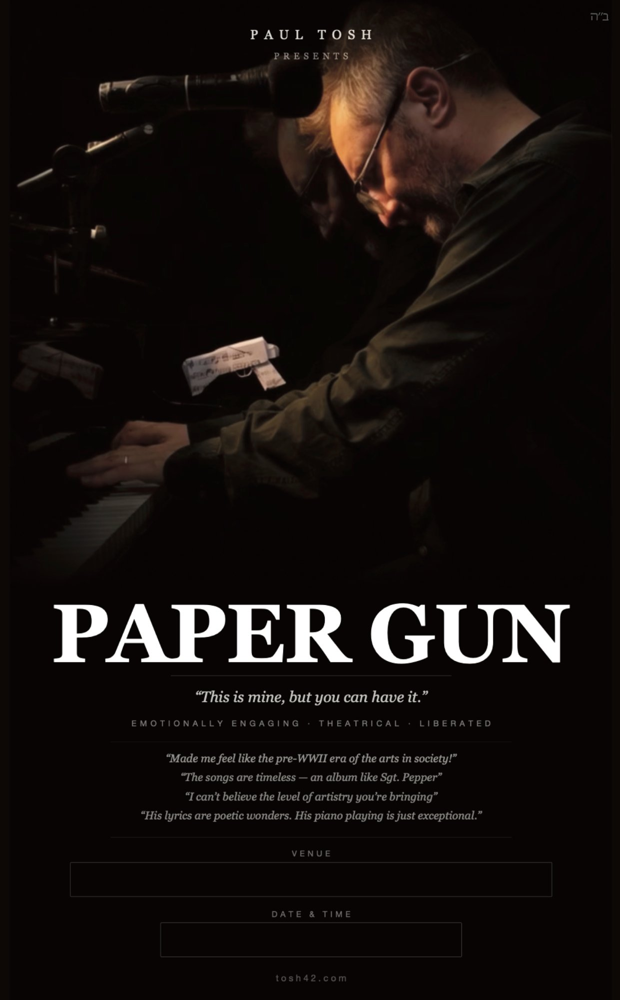

Available for venues across the US & Canada
◆ Book NowPaul Tosh presents ◆ A Premium Solo Show ◆ tosh42.com
EMOTIONALLY ENGAGING · THEATRICAL · INDEPENDENCE
Paper Gun is an original song cycle — An operetta in three acts of twenty minutes each. A paper theme tied to the shadow and Talmudic parallels about sacrifice, in which one man plays both sides of himself. Ending in independence and warmth, taking no prisoners on the way.
See It For Yourself
This work is personal and cathartic — but in delivery the perspectives broaden. I find myself more careful for the audience's sake than I am for my own. I still want to be honest — but it has been the privilege of getting to explore the ideas in a way that makes a connection, that you come to know yourself better. It is an alchemy that feels like it comes from above.
The pieces were all tested out live — see below.
A short preview of the show — the tone, the presence, the dramatic arc in miniature. To see the full rehearsal run of all three acts, email me directly and I'll send you the link — [email protected]
Full Programme Poster

The Programme
The protagonist contains extremes. "I know in this song the bully is me, but the bully is feeling free." He's not the innocent party observing. He's someone who recognises the negative pull in himself, fights it, and emerges. That's the whole arc. This work operates on multiple registers simultaneously — emotional, theatrical, talmudic — and different audiences will unlock different layers.
It will touch you like lightning and leave you with gold.
Click a song, see a line.
Act One · The Trap · Paper Gun
Act Two · The Struggle · Paper Crown
Act Three · The Emergence · Paper Heart
Full Performances
There are two people in every difficult relationship. In my experience — they're often the same person. Say something true to someone you love and if the painter takes themselves out of the painting, you are left in something beautiful, but still holding both sides of whether you did the right thing. Tonight you're going to get a sense of independence, and what that means for better for worse, and ultimately for better. A vicarious exercise in shadow work, through our French Brother — "I'm alright, Jack" — though equally understood as: lover, sister, father, or mother. Whatever your shadow work is, because it's in you / not outside of you.
Full pieces below tested live — see how they land in a room.
What People Say
"I especially like the substantive intellectual meaning that you weave into your music. You remind me of the inspiring Shlomo Carlebach ע״ש."Rabbi Daniel Lapin — RabbiDanielLapin.com
"Last night made me feel like the pre-WWII era of the arts in society! Loved it."Libby Fox (hostess) — Charleston home concert — swampfoxdockandmarine.com
"It's Beatles, it's U2, it's Bob Dylan, Lenny Kravitz and Billy Joel, it's jazz — you write this style and that style — you have obviously been influenced by all the songs you have been playing through the years. The world would welcome something like this now with open arms. The songs are timeless. It's an album like Sgt. Pepper."Orna Wellman — Drama and English teacher, Canada — instagram.com/ornawellman
"Really good solid organic original material — it has to be experienced live. They're not simple in terms of structure nor in terms of emotional content."Miguel Cavazos — Session drummer, LA
"I can't believe the level of artistry you're bringing to the people in these residential homes. I bet they'd never seen anything like it before."Joe Tepperman — Author & theater writer
"Light, serious, fun. Paul's songs are alive — you have to live with them. Paul also sets the standard when it comes to camaraderie and healthy artistic sharing."Mesoud Benasuly — Session bass player, New York City
"I think I've listened to that song a hundred times — but that might be the first time I've actually heard it."Video testimonial — audience member
"A poetic call to presence — reminding us that the pursuit itself is the purpose, and that love, more than anything, is the foundation of it all. So much fun to watch Paul's creative brain at work… a true pleasure."Amy Kirshtein — at Libby & Daniel's home concert
"This is as different a performance as anything I've seen in the Listening Room Network. It's really more performance art than musical performance — as much poetry as it is music. His piano playing is just exceptional."Listening Room Network — Audition Review, August 2025
From the audience —
For Whom & Where
This is not background music. It is not ambient entertainment. It is a performance that asks something of its audience — and gives a great deal more in return.
It's a solo show in which one performer holds two characters. The audience tracks two distinct presences, even though it's one body at the piano. If the audience has the booklet with the character lines marked, they become co-readers of the drama as it unfolds.
The Audience
The Venues
Investment
$1,400All-inclusive · Travel · Accommodation · Sound
Paul travels in a custom self-contained performance camper, making him available for venues across the entire United States and Canada — with no hotel riders, no staging requirements, no hidden costs.
Referrals
If a venue or community comes to mind that you think would be a good fit — a country club, a shul, a JCC, a supper club, a home concert host — I'd love to hear from you. I offer a referral fee for any booking that comes through your introduction.
Pass It Along →About the Performer
Born in Scotland. Formed in Europe. Seasoned across a decade of performances for senior communities on the American East Coast. Paul Tosh is a therapeutic musical performer whose work refuses the easy distinction between entertainment and art.
His signature approach — Song Is The Play — treats every performance as a piece of theatre: looping piano, dramatic song, and the kind of presence that makes a familiar melody feel heard for the first time. Paper Gun is his most personal and fully realised work to date: a show about damage, clarity, and the quiet violence of the truth.
Paul's celebrated concert show — Billy Joel, The Beatles, Bob Dylan, Sinatra, Neil Diamond, and originals, performed as theatrical prose with looping piano.
See the full show →Video Testimonials
Promotional Material
Credits
Piano & Vocals
Paul Tosh
Narrator
Mesoud Benasully
Executive Producer
Rabbi Eli Gestetner — The Signpost
With thanks to Claude AI for incredible organising help and web design.
With ultimate thanks to Hashem.
Book the Show
To discuss availability, venue fit, or pricing, reach out directly. Paul responds personally to every enquiry.
Ready to book? Paul responds personally to every enquiry.
◆ Book Now